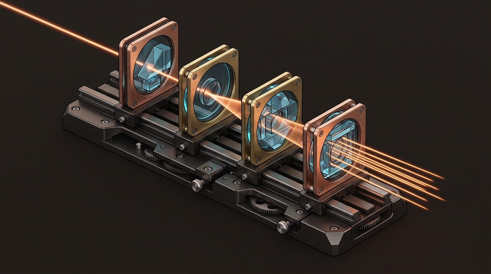

Customizing Claude Code from the inside with in-process TypeScript and JavaScript mods—building live terminal HUDs, prompt and tool interceptors, custom slash commands, and sec-default guardrails.
register(on, options)
Before / After / Around Hooks
Custom Terminal & App HUDs
Hot-Reload dev-mods
sec-default Governance
($, e, next) pipelines.ui.render.dev-mods instantaneously.Classic shell hooks spawn slow external subprocesses that can only say yes or no, while MCP servers sit outside the agent waiting to be called. Claude Code Mods run inside the live process as native TypeScript and JavaScript middleware—letting you reshape prompts, rewrite tool calls, and paint custom UI frames at sub-millisecond speed.
sec-defaultp. 10register(on, options)p. 5$ API, Zero-NPM & /commandsp. 6dev-modsp. 7nextAll
Think of Claude Code’s runtime loop like an HTTP web server, except the packets flowing through it are user prompts, tool invocations, slash commands, and UI render frames. Before Mods, customizing Claude Code meant bolting shell scripts onto settings.json—paying Node or Python startup overhead on every tool call, losing in-memory state between turns, and having zero control over the terminal screen. Mods replace brittle glue scripts with an ordered chain of in-process TypeScript functions that share persistent session state and pass events forward via await next(e).
await next(e) like peeled layers of an onion, a single 15-line mod can record a timestamp before a tool runs, let the tool execute, and scrub leaked .env tokens from the tool’s stdout before those bytes ever enter Claude’s context window.
A Claude Code Mod is simply a standard Claude Code plugin whose hooks/hooks.json declares a "modules" array. There is no build step, bundler, or tsconfig.json required—Claude Code compiles and validates your TypeScript natively at load time.
v2.1.287+: Minimum release supporting in-process hook "modules", the $ Mods API, and ui.render across CLI and Desktop..ts and .js ES modules load directly without Webpack, Vite, or node_modules.claude plugin validate ./my-mod to trigger static capability scanning before enabling any mod.my-guardrail-mod/
├── .claude-plugin/
│ └── plugin.json # Name, version & optional userConfig
└── hooks/
├── hooks.json # Declares "modules": ["./register.ts"]
└── register.ts # Exports register(on, options)Paths inside "modules" resolve relative to the hooks/ folder.
# 1. Confirm Claude Code meets the v2.1.287+ Mods runtime floor:
claude --version # Must output 2.1.287 or newer
# 2. Run static capability & schema validation on a local mod directory before loading:
claude plugin validate ./my-guardrail-mod # Audits $ API usage, blocks npm imports & prints capabilities| Dimension | Claude Code Mods (register.ts) |
Classic Shell Hooks (settings.json) |
Claude Skills (SKILL.md) |
MCP Servers (Stdio / HTTP) |
|---|---|---|---|---|
| Execution Model & Latency | In-process TS/JS (<1 ms); persistent memory across the whole session. | Spawns a fresh OS subprocess per event (50–400 ms startup overhead). | Markdown instructions loaded into prompt context on demand. | Out-of-process RPC server invoked only when Claude picks a tool. |
| Prompt & Tool Rewriting | Full read/write middleware: mutate inputs, mock results, or redact outputs. | Mostly allow/block exit codes and limited JSON stdout flags. | Guides model reasoning softly; zero deterministic enforcement. | Cannot see or intercept prompts or built-in Bash/Edit calls. |
| Terminal & App UI Control | Native ui.render: status bars, HUD bands, side panes & panel overrides. |
None—prints plain text logs only on failure or transcript dump. | None—purely conversational behavior and domain templates. | None—returns structured tool payloads back to the model. |
External npm & SDKs |
Disallowed: zero npm/WASM so static scanner can audit capabilities. |
Allowed (any local binary, Python script, or shell tool). | Can bundle helper scripts executed via standard shell tools. | Best choice for heavy SDKs, DB drivers, OAuth & external APIs. |
| Security Boundary | Runs in-process with user privileges; governed by $ scanner + sec-default. |
Runs with user shell privileges whenever matching event fires. | Prompt-level text; relies on tool permissions for execution. | Isolated process; gated per-tool by Claude Code permissions. |
Mods transform Claude Code from a scrolling text stream into an instrumented cockpit. Below are the seven live touchpoints where TypeScript mods render telemetry, intercept risky commands, and expose instant local controls.
feat/stripe-webhooks • Staging DB Tunnel: READ-ONLY 1
Mods Queue: sec-default → blast-guard → hud-pro
main (14 unmerged commits). Will be blocked by blast-guard.
Bash — intercepted by hooks/register.ts: 4await next(e) to mask STRIPE_SECRET_KEY in stdout.test-runner: 42/42 greenschema-audit: scanningsrc/webhooks.ts (+28/-4)tests/stripe.test.ts (+41).env.production (blocked)ui.render): Persistent header painting live Git branch, active cloud profile, and ordered mod queue so you never run prod commands by mistake.
command.run): Local commands like /blast-radius execute pure TypeScript in under a millisecond without spending a single LLM token.
tool.call): Inspects Bash or Edit arguments before execution—rewriting rm -rf to trash or denying edits to protected paths.
dev-mods Hot-Reload Badge: Shows active session mods loaded from ~/.claude/dev-mods/<session-id>/ that rebind automatically on file save.
sec-default Baseline Lock: Confirms Anthropic’s built-in org policy mod occupies Slot #1, shielding managed rules and enterprise permissions.
register(on, options)
Every mod exports a single register(on, options) function. Using on(eventName, filter, handler), your handler receives ($, e, next)—giving you four clean middleware patterns: before, instead of, after, and around.
1. .claude-plugin/plugin.json
{
"name": "ops-shield",
"version": "1.0.0",
"description": "Prompt cleaner, Bash guard & secret redactor",
"userConfig": {
"strictGit": { "type": "boolean", "default": true }
}
}2. hooks/hooks.json
{
"description": "In-process middleware entry module",
"modules": [
"./register.ts"
]
}
// No shell subprocesses — loads directly into the engine3. hooks/register.ts — Before, Instead-Of, After & Around Middleware (Zero External Imports)
export function register(on: any, options: { strictGit?: boolean } = {}) {
// 1. BEFORE (prompt.submit): Rewrite messy voice/brain-dump prompts before Claude sees them
on('prompt.submit', async ($: any, e: any, next: any) => {
const raw = (e.prompt || '').trim();
if (raw.startsWith('fix:')) {
const structured = raw.slice(4).trim() + '\n\nConstraints: Run existing tests first and show a minimal diff.';
return next({ ...e, prompt: structured });
}
return next(e);
});
// 2. INSTEAD OF + AROUND + AFTER (tool.call on Bash): Block destructive commands & redact .env secrets
on('tool.call', { tool: 'Bash' }, async ($: any, e: any, next: any) => {
const cmd = String(e.input?.command || '');
if (cmd.includes('rm -rf /') || (options.strictGit !== false && cmd.includes('git reset --hard'))) {
$.ui.toast({ level: 'warning', message: 'Blocked destructive command: ' + cmd });
return { deny: 'Blocked by ops-shield mod. Use git stash or targeted file removal instead.' };
}
const startedAt = Date.now();
const result = await next(e); // Execute downstream mods + actual Bash tool
const elapsedMs = Date.now() - startedAt;
const cleanOut = String(result?.output || '').replace(/(API_KEY|SECRET|TOKEN)=([^\s]+)/gi, '$1=[REDACTED]');
await $.state.set('lastBashMs', elapsedMs);
return { ...result, output: cleanOut };
});
}
next({ ...e }), short-circuit instead of execution with { deny }, scrub secrets after await next(e) resolves, or measure latency around the entire round trip.
$), Zero-NPM Rule & /commands
Inside a mod, standard Node globals like require('fs'), process.env, and external npm packages are intentionally off-limits. Instead, every host action flows through the structured $ Mods API so Claude Code can statically audit what a plugin touches before it ever runs.
$ Capability Handle$.ui & LayoutTrigger non-blocking $.ui.toast() alerts, request re-renders, and return declarative box/row/badge trees inside ui.render slots.
$.state & $.timerPersist typed key-value counters across turns ($.state.get/set) and schedule clean session-scoped countdown intervals.
$.fs & $.processRead workspace metadata or run quick helper commands (like git status --porcelain) through auditable host methods.
$.commandRegister custom autocomplete slash commands on session.start with argument hints and instant local execution.
$.modelRun lightweight sidecar completions (e.g., Haiku classification or prompt cleanup) without polluting the main chat transcript.
$.sessionInspect token usage, active model tier, working directory, and cache timestamps to power real-time status gauges.
npm Packages, React & WASM Binaries Are Blockedclaude plugin validate or install a third-party mod, Claude Code’s static capability scanner parses the abstract syntax tree of register.ts to list every $ namespace and event hook the mod uses (for example: reads files via $.fs, intercepts tool.call, makes zero network calls). Allowing opaque node_modules trees, React reconcilers, or compiled .wasm blobs would blind static analysis and hide supply-chain attacks. Keep mods pure, lean TypeScript—and delegate heavy SDK work to an MCP server.
command.run
Markdown slash commands send a prompt to Claude and wait seconds for token generation. Mod-registered commands intercept command.run locally and return instant results in under a millisecond at zero token cost:
export function register(on: any) {
// Register /checkpoint in Claude Code's slash-command autocomplete menu on startup
on('session.start', async ($: any, e: any, next: any) => {
await $.command.register({
name: 'checkpoint',
description: 'Show dirty Git files and token budget instantly without calling the model',
argumentHint: '[optional-label]'
});
return next(e);
});
// Handle /checkpoint locally in sub-millisecond TypeScript — zero LLM round-trip!
on('command.run', { command: 'checkpoint' }, async ($: any, e: any) => {
const gitOut = await $.process.exec('git', ['status', '--short']);
const stats = await $.session.stats();
const label = e.args ? ' [' + e.args + ']' : '';
const summary = gitOut.stdout.trim() || 'Working tree clean.';
return {
text: 'Checkpoint' + label + ' (' + stats.contextTokens + ' tokens used):\n' + summary
};
});
}command.run, handle deterministic checks (Git state, port checks, regex lint) in pure TypeScript first, and call $.model.complete() only when genuine natural-language summarization is needed.
You never have to memorize event schemas to build a mod. Describe the behavior you want in plain English right inside an active Claude Code session: Claude writes the TypeScript into ~/.claude/dev-mods/<session-id>/, validates it, and hot-reloads it on save with zero restart.
Tell Claude Code what event to intercept or what HUD widget to draw. Built-in plugin-authoring context supplies exact $ types automatically.
Claude writes to ~/.claude/dev-mods/<session-id>/<mod>/. A file watcher swaps handlers in memory immediately while keeping your chat alive.
Once a session mod feels indispensable, ask Claude to package it into your repo’s plugins folder and run claude plugin validate.
Whether you are prompting Claude Code to generate a dev-mod or writing a spec for your team, include these five clauses so the generated handler passes static validation on the first try:
migration-guard.
Listen to tool.call for Write and Edit, plus session.start for a /lock-db toggle command.
Intercept before execution: if any path touches prisma/migrations/*.sql while locked, return a { deny } explanation instead of calling next(e).
Render a compact prompt-band badge via ui.render showing MIGRATIONS LOCKED in amber or UNLOCKED in emerald.
Use pure zero-dependency TypeScript and only the $ Mods API ($.state, $.command, $.ui) with zero npm or node:fs imports.
Wrap logic in try/catch so unexpected errors log a warning toast and safely return next(e) without freezing the session.”
dev-mod vs. an Installed Plugin Mod| Stage | Disk Path & Scope | Behavior & Promotion Workflow |
|---|---|---|
| 1. Live Scratchpad | ~/.claude/dev-mods/<session-id>/<name>/ |
Scoped strictly to your current terminal/app session; hot-reloads on every edit so bad experiments never pollute new chats. |
| 2. Personal Daily Mod | ~/.claude/plugins/<name>/ |
Validated once with claude plugin validate; loads automatically across all your local repositories after sec-default. |
| 3. Shared Repo Mod | <repo>/.claude-plugin/ (committed to Git) |
Checked into version control so every teammate gets project-specific guardrails and custom /commands after trust approval. |
try / catchdev-mods hot-reload while you work, instructing Claude to wrap custom logic in try { ... } catch { return next(e); } guarantees a typo during rapid iteration degrades gracefully instead of stalling your prompt input.
Unlike external CLI wrappers, a single ui.render handler renders seamlessly in both the terminal TUI and the Claude Code Desktop app—using declarative layout primitives (box, row, text, badge, progress) instead of brittle ANSI escape codes.
status-line: Compact pill metrics pinned beside model and branch indicators.prompt-band: A 1–2 row telemetry strip directly above your typing cursor (ideal for cache TTL & token gauges).side-pane: Docked vertical column for live subagent queues, test checklists, or touched-file summaries.diff-panel site to group changes by architectural layer or highlight schema risks.export function register(on: any) {
// Record timestamp whenever an LLM turn completes so we can track the 5-minute prompt cache window
on('turn.complete', async ($: any, e: any, next: any) => {
await $.state.set('lastTurnEpochMs', Date.now());
await $.state.set('ctxPct', Math.round(((e.contextTokens || 0) / 200000) * 100));
return next(e);
});
// Paint a flicker-free Prompt Cache TTL + Context Gauge directly above the input box
on('ui.render', { site: 'prompt-band' }, async ($: any, e: any, next: any) => {
const lastMs = (await $.state.get('lastTurnEpochMs')) || 0;
const pct = (await $.state.get('ctxPct')) || 0;
const remainSec = lastMs ? Math.max(0, 300 - Math.floor((Date.now() - lastMs) / 1000)) : 0;
const cacheLabel = remainSec > 60 ? 'CACHE WARM ' + remainSec + 's' : (remainSec > 0 ? 'COOLING ' + remainSec + 's' : 'CACHE COLD');
return {
type: 'row',
gap: 2,
children: [
{ type: 'badge', tone: remainSec > 60 ? 'success' : 'warning', text: cacheLabel },
{ type: 'text', text: 'Context Window: ' + pct + '% full' }
]
};
});
}ui.render trees adapt automatically from compact terminal status bands to crisp split-pane cards inside Claude Code Desktop—keeping cache warmth, context budgets, and subagent progress continuously visible.
Paste any prompt below directly into Claude Code to generate and hot-load the mod inside ~/.claude/dev-mods/ in under a minute—then promote your favorites to ~/.claude/plugins/.
| Mod Recipe | Hooks & $ APIs Used |
Copy-Paste Vibe-Modding Spec / Prompt |
|---|---|---|
| 1. Prompt Cache TTL & Cost HUD Cost Saver |
turn.completeui.render$.state, $.timer |
“Create a zero-npm dev-mod cache-hud. On turn.complete store timestamp, context %, and cumulative spend in $.state. Render a prompt-band row via ui.render counting down the 300s prompt-cache TTL (emerald >90s, amber <90s, slate when cold) so I send follow-ups before cache expiry. Memoize state per second to prevent flicker.” |
| 2. Blast-Radius Shell Interceptor Safety Shield |
tool.call (Bash)command.run$.ui.toast |
“Build a zero-npm dev-mod blast-guard. Intercept tool.call for Bash: block DROP TABLE, TRUNCATE, git push --force, and recursive rm -rf outside ./tmp or ./dist by returning { deny } with a safe alternative. Also register /blast-radius <cmd> on command.run to score command risk locally with zero LLM tokens.” |
| 3. Secret & API-Key Redactor Zero-Leak Privacy |
tool.call (All)prompt.submit$.state |
“Create a zero-npm dev-mod secret-scrub. Wrap await next(e) on tool.call (Bash, Read, Grep) and scrub sk-ant-*, sk-proj-*, AKIA*, ghp_*, Bearer JWTs, and .env assignments from returned output before the model sees them. Keep a redacted counter in $.state and display total scrubbed secrets in status-line.” |
| 4. Rambling Voice-Prompt Structurer Input Polish |
prompt.submit$.model$.command |
“Build a zero-npm dev-mod voice-polish. When a submitted prompt starts with v: on prompt.submit, strip filler words and use $.model.complete (fast tier) to structure the rambling dictation into Goal, Target Files, and Verification Steps, then pass the clean text via next({ ...e, prompt }). Fall back to raw text on timeout.” |
| 5. Subagent & Touched-Files Tracker Swarm Visibility |
tool.callsubagent.*ui.render (side-pane) |
“Create a zero-npm dev-mod swarm-radar. Track every file modified by Write/Edit and active subagent tasks in $.state. Render a side-pane via ui.render listing running subagents at the top and deduplicated modified paths with edit counts underneath, plus a /reset-radar local slash command to clear the list.” |
next(e), five small 60-line single-purpose mods are dramatically easier to debug, validate, and toggle on or off than one monolithic 500-line mega-mod.
sec-default Governance
Understanding one architectural truth prevents serious security mistakes: Claude Code Mods run in-process with your full OS user privileges—they are capability-audited via $, not isolated inside a hypervisor VM.
register.ts Files Like Local Shell Scripts or Git Hooksregister.ts source and running claude plugin validate. Because mods are zero-dependency and typically 40–120 lines of plain TypeScript, a full human + static capability audit takes less than sixty seconds.
sec-default
In middleware queues, whoever registers first owns the outermost gate. On Team and Enterprise environments (or wherever managed settings exist), Anthropic’s built-in cc-plugin-sec-default@builtin mod is pinned to Slot #1 ahead of every plugin and session dev-mod:
CLAUDE.md policies.sec-default (Built-In Org Guard): Immutable Slot #1 baseline when managed policies are active.~/.claude/plugins/ and trusted repo bundles.dev-mods: Ephemeral scratchpad mods in ~/.claude/dev-mods/<session-id>/.Earlier mods inspect inputs first and inspect returned outputs last.
managed-settings.json
Security teams can configure sec-default to allow only IT-signed managed mods (blocking ad-hoc personal plugins and dev-mods on regulated machines) while enforcing capability validation in GitHub Actions CI:
// Enterprise managed-settings.json — locks workstations to IT-approved managed mods only:
{
"pluginConfigs": {
"cc-plugin-sec-default@builtin": {
"options": {
"allowManagedModsOnly": true,
"protectManagedPrompts": true
}
}
}
}
# CI Gate (.github/workflows/validate-mods.yml) — reject PRs if any repo mod fails static scanning:
claude plugin validate ./tools/claude-mods/ops-shield --strict{ deny } blocking, run it for one sprint in observe mode—logging matched commands via $.ui.toast() and passing events through next(e) so platform engineers can tune false positives without interrupting developer flow.
Mods do not replace Skills, MCP servers, or Git worktrees—they complete the stack by supplying the missing deterministic runtime layer that keeps autonomous multi-agent coding fast, visible, and safe.
You launch claude --worktree hotfix-webhook. Your repository’s incident-triage/SKILL.md instructs Claude on service boundaries while the Sentry and Postgres MCP servers pull the failing stack trace and row metadata.
As Claude queries staging and edits TypeScript inside the isolated worktree, your Mods scrub customer PII from MCP tool outputs before context ingestion, block any write SQL against production, and keep your prompt-cache TTL warm in the bottom HUD.
CLAUDE.md or SKILL.md rule is probabilistic—under a 180k-token context window, models occasionally forget soft instructions. Moving hard invariants (blocking --force, redacting tokens, locking migration directories) into a 30-line Mod makes compliance 100% deterministic.
Ninety-five percent of mod hiccups trace back to one of seven predictable causes. Use this table for ten-second fixes before shipping a mod to your daily workflow or team repository.
| Symptom / Error | Root Cause | 10-Second Fix |
|---|---|---|
| 1. Capability scanner rejects mod on validate/install | register.ts imports an npm package, node:fs, process, or a .wasm binary. |
Delete external imports; use native ES syntax and $.fs, $.process, or $.state. Move heavy SDK calls into an MCP server. |
| 2. Session freezes right after submitting a prompt or tool | A middleware handler exited a branch without returning await next(e) or a terminal response object. |
Audit every if / else and catch path in register.ts to ensure it returns either next(e) or an explicit { deny } / { text } result. |
3. Session dev-mod ignored or permission override blocked |
sec-default in Slot #1 enforces enterprise denials or allowManagedModsOnly: true. |
Inspect managed policy via /status; user mods cannot weaken org denials. Request IT promotion if the mod belongs fleet-wide. |
| 4. Status bar or HUD flickers on every keystroke | ui.render runs slow shell subprocesses or recomputes uncached values synchronously on each frame. |
Never call $.process.exec inside ui.render! Compute state asynchronously on turn.complete / tool.call, store in $.state, and read memory in ui.render. |
5. Module not found for ./register.ts |
Path in hooks/hooks.json was written relative to repo root (./hooks/register.ts) instead of hooks/. |
Set "modules": ["./register.ts"] inside hooks/hooks.json and keep register.ts right beside hooks.json. |
6. "modules" key silently ignored at startup |
Local Claude Code binary predates the v2.1.287 Mods engine release. |
Run claude update (or upgrade Claude Code Desktop) and confirm claude --version reports 2.1.287 or higher. |
7. Two mods conflict on the same /command or rewrite |
Both mods short-circuit command.run or overwrite e.prompt instead of composing cleanly. |
Namespace custom slash commands (e.g., /ops-check) and mutate next({ ...e }) incrementally rather than discarding prior fields. |
claude --version is v2.1.287+ across CLI and Desktop.npm, React, WASM, or raw Node built-ins—only clean $ API calls.next(e): Wrapped custom logic in try/catch with a safe return next(e) fallback.ui.render: Shell/model work cached in $.state on events; zero I/O inside render frames.claude plugin validate ./mod-dir with zero schema or capability warnings.register.ts knowing mods run in-process with user privileges.